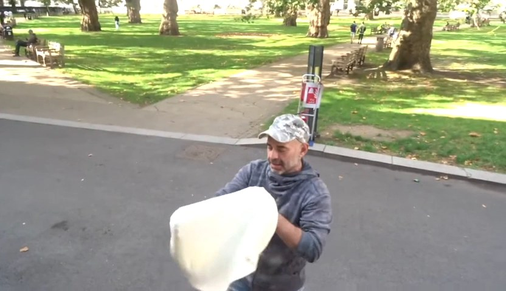
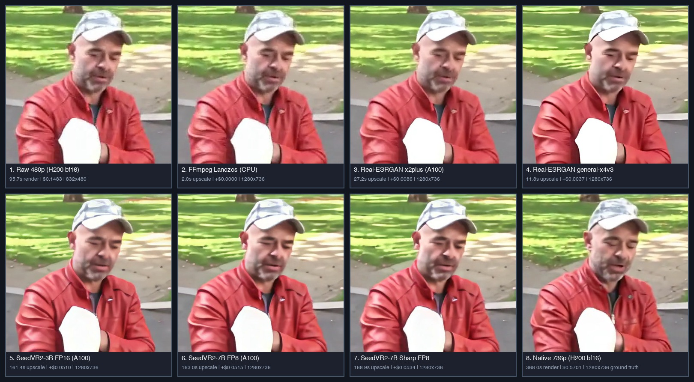
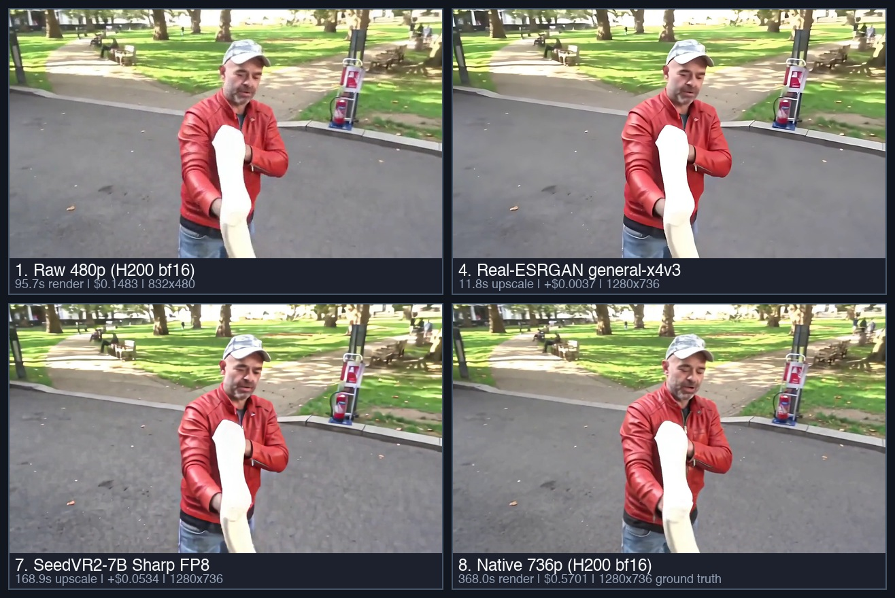
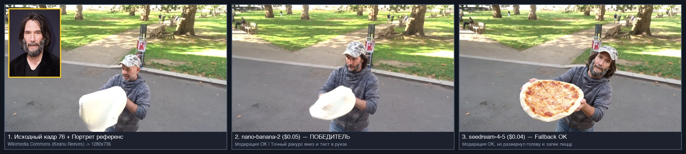
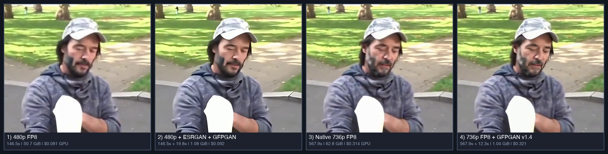

До: исходный кадр 76 (00:03.167) — серая худи

После (nano-banana-2): красная кожаная куртка, лицо/фон сохранены
swap / edit) на базе MiniMax-H3 / Viggle-Remake и облака GPUniq
audio.m4acontact_sheetnano-banana-2 · ref_1.pnggemini-3-flash · 6 секцийjob.json · чек-метрикиMiniMax-H3 + Viggle LoRAloki-remake prepare (по пунктам)video/normalize.py
1.03 сек · $0
MiniMax-H3 жёстко требует 24 fps, стороны кратные 32 и число кадров строго по сетке
17n + 5 (от 90 до 345 = до 14.4 сек). Скрипт через FFmpeg приводит любой входной ролик к нужному
канвасу (cond.mp4: 832×480, 24 fps, 226 кадров) и отдельно вырезает чистую
аудиодорожку (audio.m4a), чтобы не потерять и не сдвинуть звук.
video/shots.py
0.40 сек · $0
OpenCV ищет резкие монтажные склейки (по HSV-гистограммам и скачку яркости) и разбивает видео на сцены
([Shot 1], [Shot 2]…). Внутри каждой сцены он оценивает резкость (Laplacian variance), чтобы
не схватить смазанный кадр в движении, вырезает лучший опорный кадр (shot_1_f76.png — 76-й кадр,
00:03.167) и склеивает 16-кадровую сетку с таймкодами contact_sheet.jpg для анализа всей динамики.
gpuniq/painter.py
54.17 сек · $0.0500
Viggle-Remake устроен так: ему нужно показать минимум 1 уже изменённый кадр, и он сам натянет изменение
на всё видео. Скрипт отправляет shot_1_f76.png (и фото-референс юзера, если передан --ref) в
GPUniq Image Jobs на nano-banana-2 (при отказе модерации или сбое автоматически переключается на
gpt-image-2), подгоняет результат точно под целевой канвас и сохраняет painted/ref_1.png.
gpuniq/prompter.py
19.92 сек · $0.0083
Видеомодель плохо слушается свободного текста — ей нужна строгая 6-секционная структура
(subject_definitions, summary, retention_analysis,
detailed_description, overall_soundscape, non_diegetic_music) с точными
таймкодами. Скрипт отправляет в gemini-3-flash (с бюджетом max_tokens=4096 под reasoning)
раскадровку contact_sheet.jpg, готовый ref_1.png и таблицу таймингов, затем прогоняет ответ
через валидатор (ASCII, порядок секций, запрет слова dim, контроль таймкодов до конца ролика; при
ошибке автоматически делает 1 ремонтный запрос) и сохраняет prompt.txt.
job.json — pipeline.py
Итого: 75.5 сек · $0.0583
Все пути к артефактам, номер привязанного кадра (pin_frame: 76), итоговый промпт, время каждого этапа
и фактические затраты сохраняются в структурированный job.json, полностью готовый к отправке на GPU-воркер.
Тест запускался на эталонном демо-ролике из репозитория Viggle (samples/demo_source.mp4, 9.4 сек, пиццайоло
в парке) в режиме edit с инструкцией: «Change the man's grey hoodie into a bright red leather jacket,
keeping his face, grey cap, jeans, pizza dough, and park background identical» (--tier 480 --max-refs 1).

| Метрика / Проверка | Результат | Комментарий |
|---|---|---|
Выходной канвас (ffprobe) |
832×480 · 24 fps · 226 кадров |
Кратность 32, сетка 17n + 5, аудио вынесено в audio.m4a |
Время подготовки (7fcc7066e2) |
75.52 сек суммарно | normalize 1.03s · shots 0.40s · paint 54.17s · prompt 19.92s |
| Стоимость подготовки (GPUniq API) | $0.0583 (~6 ₽) | nano-banana-2: $0.0500 · gemini-3-flash: $0.0083 |
| Качество кода и автотесты | ruff 0 ошибок · pytest 25/25 passed |
Покрытие: нормализация, сцены, валидатор, движок sample.py, апскейл, user_refs, run_ssh таймер |
| Баланс аккаунта GPUniq | $100.6657 (свободно) | Шаг 2 (H200): $1.4872 · Апскейл (A100): $0.7276 · PRO 6000 FP8 + 736p/GFPGAN тесты 2c (с отладкой и батчами): $9.1337 (активных GPU: 0) |
| Этап | Статус | Что сделано / планируется |
|---|---|---|
| Шаг 0 — Инициализация | Готово · e9f66ab | Репо kilebles/loki-prj, uv-окружение, .gitignore, базовая структура |
Шаг 1 — Локальный пайплайн prepare |
Готово · 913423b | Нормализация, детектор склеек, painter, 6-секционный VLM-промптер, CLI, тесты и live smoke-тест |
| Шаг 2 — GPU-стенд на GPUniq | Готово · 86e8c5d | Провижининг, setup_gpu.sh (4 мин 12 с), замеры 480p (95.7s) vs 736p (368.0s), автоудаление |
Шаг 2b — Бенчмарк апскейлеров 480p → 736p |
Готово · 0df58ae | Замеры Real-ESRGAN (x2plus, x4v3), SeedVR2 (3B, 7B, 7B Sharp) на A100 SXM4, проверка Topaz API и сравнение с 736p |
Шаг 2c — Face Swap, celebrity-тест и RTX PRO 6000 FP8 |
Готово · GPU verified | Проверка модерации знаменитостей (nano-banana-2/seedream-4-5/flux-2-pro), нативный 736p FP8 (torchao 0.15.0) на 96GB GPU, GFPGAN v1.4 (вкл. 2+ лица с EMA-трекингом) |
| Шаг 3 — Серийный прогон боевых роликов + HTTP-воркер | Следующий этап | Серия вертикальных роликов заказчика 9:16 (swap/edit), прогретый демон с FP8 в памяти (без 4.4-мин холодной квантизации на каждый ролик) |
| Шаг 4 — Сдача PoC и переход в прод | План | Итоговый отчёт заказчику, затем HTTP API + Redis + GPUniq Burst автоскейлер |
Развёрнут боевой инстанс 1× NVIDIA H200 (139.8 GiB VRAM, 251 GiB RAM) на GPUniq Marketplace
($5.577/ч с поминутным биллингом). Установка окружения (torch 2.9.1 + cu128,
diffusers@d6726f3) и скачивание ~144 GB весов MiniMax-H3 + Viggle-Remake заняли
4 мин 12 сек; оба прогона (480p и 736p) отработали чисто с сохранением звука,
после чего инстанс сразу удалён (Active instances: 0).

out_480.mp4 (0.50s · 3.17s · 8.33s): красная кожаная куртка стабильно держится на всей длине ролика
| Режим / Канвас | Чистый инференс | Wall (с загрузкой весов) | Пик VRAM (alloc / res) | Цена генерации (инф. / wall) |
|---|---|---|---|---|
480p bf16 (832×480, 226 к.) |
95.7 сек (~12.3 с/шаг) | 154.5 сек | 87.0 / 96.1 GiB | $0.1483 (~15 ₽) / $0.2394 |
736p bf16 (1280×736, 226 к.) |
368.0 сек (~52.3 с/шаг) | 433.6 сек | 103.0 / 122.5 GiB | $0.5701 (~57 ₽) / $0.6718 |
736p оказался в 3.85× дольше и дороже
480p и требует >122 GiB VRAM. Ниже — прямой замер всех способов дотянуть 480p до
736p по качеству, скорости и деньгам. Остаток на GPUniq: $109.7994.
На одном и том же рендере out_480.mp4 (832×480, 9.42 сек, 226 кадров, звук сохранён)
протестированы 5 нейросетевых апскейлеров на 1× A100 SXM4 40GB ($1.1376/ч),
быстрый CPU FFmpeg Lanczos, облачный Topaz Proteus API и эталонный нативный 736p на H200.
| Вариант | Разрешение | Апскейл | Итого GPU | Цена апскейла | Итого за ролик* | Визуальный вердикт |
|---|---|---|---|---|---|---|
| 1. Raw 480p (H200 bf16) | 832×480 |
— | 95.7 сек | $0 | $0.2066 (~21 ₽) | Мутное лицо и борода — как финал не годится |
| 2. 480p + FFmpeg Lanczos | 1280×736 |
2.0 сек | 95.7 сек | $0 | $0.2066 (~21 ₽) | Простое растягивание без деталей (контроль) |
| 3. 480p + Real-ESRGAN general-x4v3 | 1280×736 |
11.8 с (0.24 GiB) | 107.5 с (1.8 мин) | $0.0037 (<0.5 ₽) | $0.2103 (~21 ₽) | Лидер скорость/цена: чёткая куртка, кепка, брови без дрейфа лица; лёгкое сглаживание кожи |
| 4. 480p + Real-ESRGAN x2plus | 1280×736 |
27.2 с (0.81 GiB) | 122.9 с (2.0 мин) | $0.0086 (~1 ₽) | $0.2152 (~22 ₽) | Кожа чуть мягче, чем у x4v3, но слабее мелкие детали при 2.3× большем времени |
| 5. 480p + SeedVR2-3B FP16 | 1280×736 |
161.4 с (16.7 GiB) | 257.1 с (4.3 мин) | $0.0510 (~5 ₽) | $0.2576 (~26 ₽) | Диффузия дорисовывает глаза и надписи в смазе, но +2.7 мин на A100 |
| 6. 480p + SeedVR2-7B FP8 | 1280×736 |
163.0 с (16.7 GiB) | 258.7 с (4.3 мин) | $0.0515 (~5 ₽) | $0.2581 (~26 ₽) | Близко к 3B, без явного выигрыша против 7B Sharp |
| 7. 480p + SeedVR2-7B Sharp FP8 | 1280×736 |
168.9 с (16.7 GiB) | 264.6 с (4.4 мин) | $0.0534 (~5 ₽) | $0.2600 (~26 ₽) | Лучший апскейл по деталям: самые чёткие глаза, кожа куртки и фон; на H200/5090 быстрее |
| 8. 480p + Topaz Proteus (API) | 1280×736 |
> 49 мин (таймаут) | — | оценка $0.28 ($0 спис.) | — | 2 запуска зависли в processing > 49 мин — не подходит под SLA 1.5–3 мин |
| 9. Native 736p (H200 bf16) | 1280×736 |
— | 368.0 с (6.1 мин) | — | $0.6284 (~63 ₽) | Эталон качества: натуральная кожа и мимика в движении, но в 3× дороже и 3.4× дольше |
* «Итого за ролик» = подготовка VLM/Nano Banana ($0.0583) + инференс H200 480p ($0.1483) + апскейл на A100 (или натив 736p $0.5701). Ориентир ~100 ₽/$.


480p + Real-ESRGAN general-x4v3 прямо на том же H200/PRO 6000 воркере (всего +11.8 сек и ~0.24 GiB VRAM, не нужен отдельный сервер). Итого ~1.8 мин GPU и ~$0.21 (~21 ₽) вместо ~6.1 мин и ~$0.63 (~63 ₽) за нативный 736p — экономия 3× при заметно более чёткой одежде и фоне.480p + SeedVR2-7B Sharp FP8 (~$0.26 / ~26 ₽; в коде уже убран --prepend_frames 4 для 100% синхра звука) либо нативный 736p (~63 ₽) для премиум-запросов.9:16 от Насти и замерить Q8_0 на RTX PRO 6000 96GB.
Для режима --mode swap проверены два критичных вопроса: (1) пропускают ли Image-модели провайдера GPUniq замену лица на знаменитость, и (2) помещается ли нативный 736p в один дешёвый сервер RTX PRO 6000 Blackwell 96GB ($1.9907/ч — в 2.3× дешевле H200) с помощью torchao 0.15.0 Float8WeightOnlyConfig и коммерчески безопасной постобработки YuNet + GFPGAN v1.4 + Real-ESRGAN general-x4v3.
| Image-модель (Шаг 3: покраска рефа) | Модерация (имя «Keanu Reeves») | Время / Цена | Точность позы, ракурса и сцены (demo_source) |
|---|---|---|---|
| nano-banana-2 (по умолчанию) | Прошла с именем | 174.8 с · $0.0500 | Выбрана: идеально сохранила наклон головы вниз, взгляд на руки, кепку, кофту и сырое тесто для пиццы |
| seedream-4-5 (1-й фолбэк) | Прошла с именем | 476.9 с · $0.0400 | Дольше в 2.7×; развернула голову прямо в камеру и превратила тесто в готовую пиццу пепперони |
| flux-2-pro (2-й фолбэк) | generation_failed (96.6 с) |
$0.0000 (без списания) | Апстрим-ошибка провайдера; каскад автоматически переключен на следующий фолбэк gpt-image-2 |

nano-banana-2 → seedream-4-5): nano-banana-2 прошла без цензуры и точнее сохранила геометрию исходной сцены
Вариант swap на RTX PRO 6000 WS ($1.9907/ч) |
Выход | Рендер / Пост | Пик VRAM | Чистая GPU-цена* | Визуальный итог (проверено покадрово) |
|---|---|---|---|---|---|
| 1. 480p FP8 (226 кадров / 9.42 с) | 832×480 |
146.5 с (2.4 мин) | 50.7 GiB alloc (60.2 res) | $0.081 (~8 ₽) | Черты узнаваемы, но 480p мылит кожу и даёт тёмное пятно под щекой |
| 2. 480p FP8 + Real-ESRGAN v3 + GFPGAN | 1280×736 |
146.5 + 19.8 с (195/226 лиц) | 1.08 GiB (пост) | $0.092 (~9 ₽) | Чёткие глаза, ресницы и ткань кофты, но CNN/GAN закрепляет и подчёркивает артефакт тени 480p на щеке |
| 3. Native 736p FP8 (впервые на 96GB!) | 1280×736 |
567.9 с (9.5 мин) | 62.8 GiB alloc (81.8 res) | $0.314 (~31 ₽) | Чистая геометрия лица без артефакта 480p; почти в 2× дешевле нативного 736p на H200 bf16 ($0.57) |
| 4. Native 736p FP8 + GFPGAN v1.4 | 1280×736 |
567.9 + 12.3 с (199/226 лиц) | 1.04 GiB (пост) | $0.321 (~32 ₽) | Эталон для Face Swap: отсутствие блочных теней + естественная детализация кожи, бороды и глаз |
| 5. 480p FP8 (2 персонажа + 2 одежды, 345 к. / 14.38 с) + Multi-Face GFPGAN | 1280×736 |
282.7 + 32.4 с (345/345, 690 лиц) | 55.5 GiB alloc (70.7 res) | $0.174 (~17 ₽) | Быстрая дорожка для максимума 14.4 с в ночном авто-селфи (2 рефа): стабильный лип-синк и 100% детекция обоих лиц |
| 6. Native 736p FP8 (2 персонажа + 2 одежды, 345 к. / 14.38 с) + Multi-Face GFPGAN | 1280×736 |
1141.9 + 25.7 с (345/345, 694 лиц) | 74.0 GiB alloc (84.5 res) | $0.752 (~75 ₽)* | Поместился на 1× 96GB GPU! Точнее передаёт повороты головы в середине клипа (без пина), натуральнее складки одежды и кожа |
* Холодная загрузка и FP8-квантизация трансформатора: 108–266 с (41.2 GiB VRAM) 1 раз на воркер; для строки 6 указан фактический тариф PRO 6000 S ($2.3172/ч, по тарифу $1.99/ч — $0.646).

MiniMax-H3 + FP8 в прогретом воркере рендерит 480p за 2.4–4.7 мин (~8–17 ₽ GPU) с контролируемой детерминистичной логикой и без цензуры на референсы.RTX PRO 6000 96GB + FP8 + GFPGAN v1.4 закрывает даже максимальные 14.4 с (345 кадров) с заменой нескольких лиц и одежды за ~$0.17 на быстрой дорожке и ~$0.32 в нативном 736p + GFPGAN.